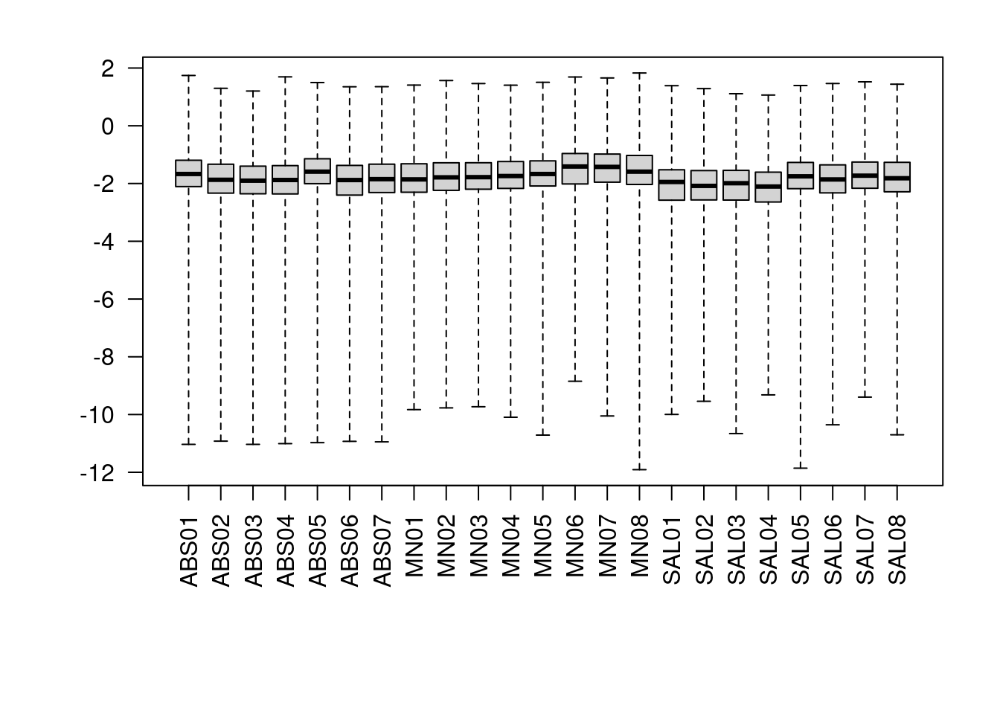
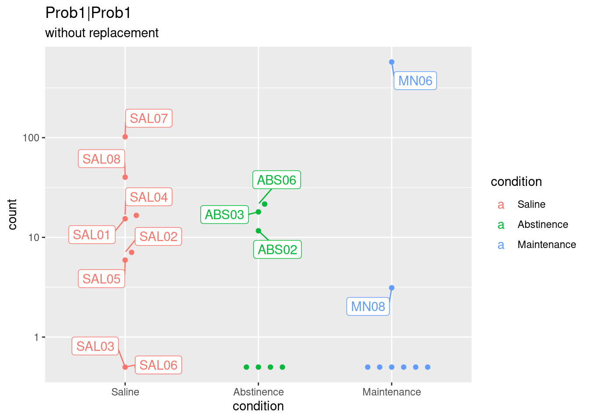
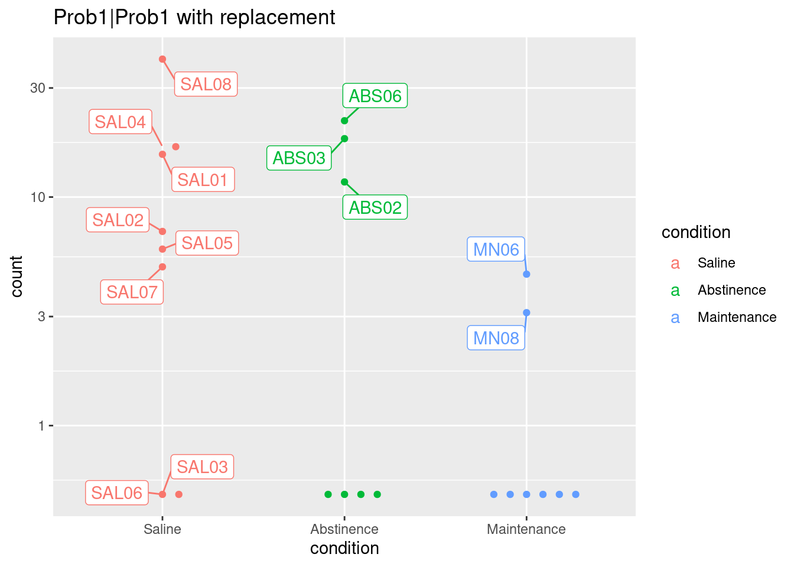
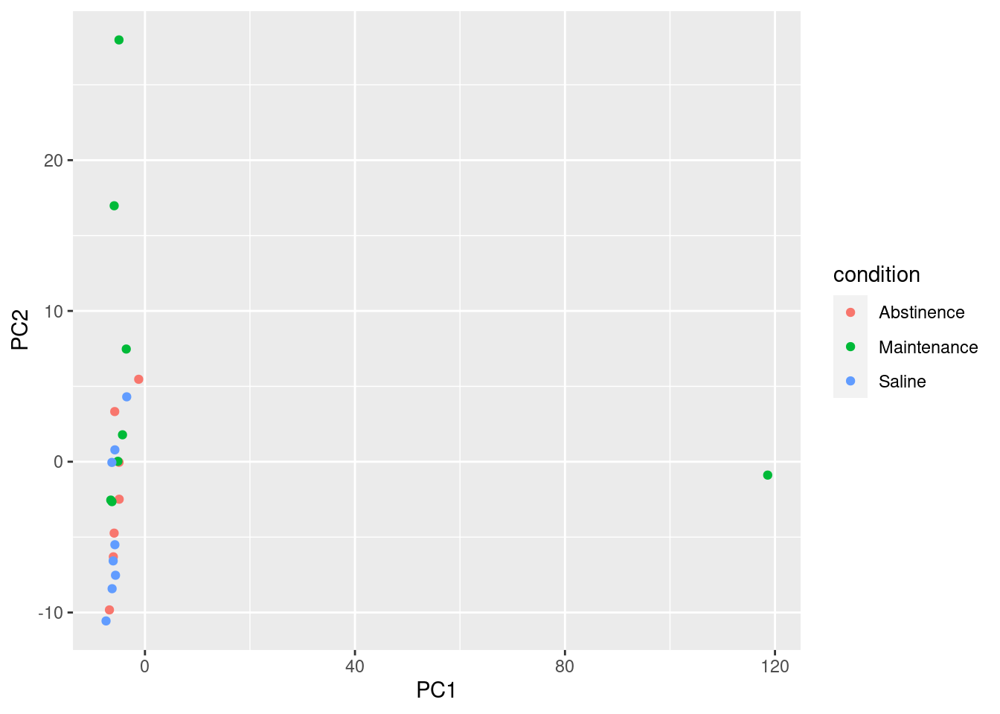
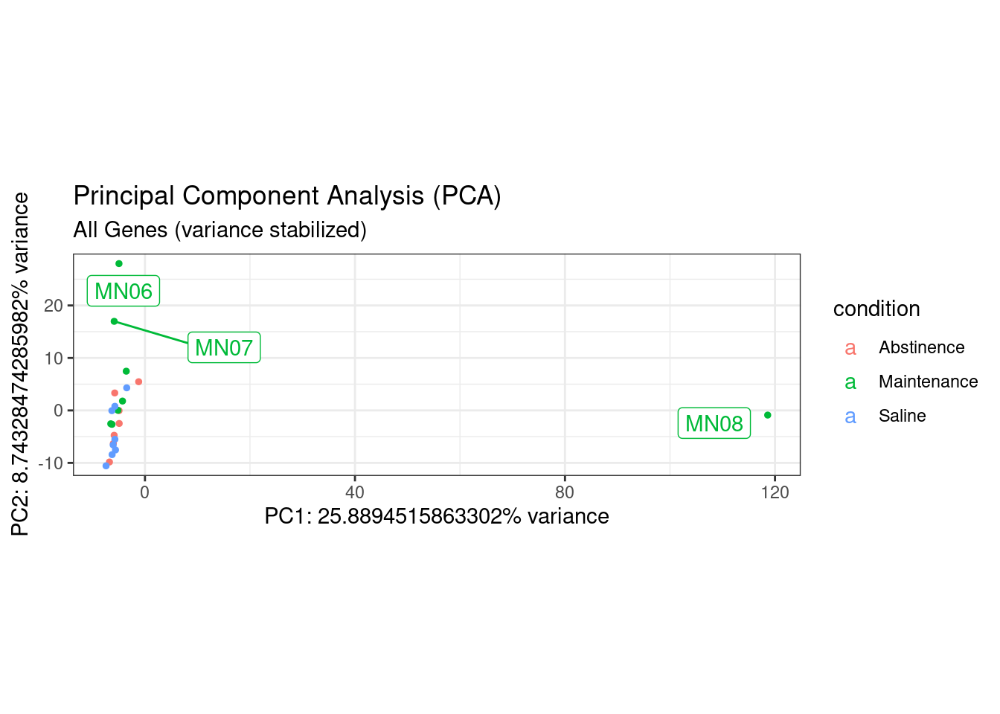

Testing Outliers
Alexander Margetts
2023-10-19
Last updated: 2023-10-19
Checks: 7 0
Knit directory:
Methamphetamine_MicroglialRNASequencing_Analysis/
This reproducible R Markdown analysis was created with workflowr (version 1.7.0). The Checks tab describes the reproducibility checks that were applied when the results were created. The Past versions tab lists the development history.
Great! Since the R Markdown file has been committed to the Git repository, you know the exact version of the code that produced these results.
Great job! The global environment was empty. Objects defined in the global environment can affect the analysis in your R Markdown file in unknown ways. For reproduciblity it’s best to always run the code in an empty environment.
The command set.seed(20231019) was run prior to running
the code in the R Markdown file. Setting a seed ensures that any results
that rely on randomness, e.g. subsampling or permutations, are
reproducible.
Great job! Recording the operating system, R version, and package versions is critical for reproducibility.
Nice! There were no cached chunks for this analysis, so you can be confident that you successfully produced the results during this run.
Great job! Using relative paths to the files within your workflowr project makes it easier to run your code on other machines.
Great! You are using Git for version control. Tracking code development and connecting the code version to the results is critical for reproducibility.
The results in this page were generated with repository version e92ae3e. See the Past versions tab to see a history of the changes made to the R Markdown and HTML files.
Note that you need to be careful to ensure that all relevant files for
the analysis have been committed to Git prior to generating the results
(you can use wflow_publish or
wflow_git_commit). workflowr only checks the R Markdown
file, but you know if there are other scripts or data files that it
depends on. Below is the status of the Git repository when the results
were generated:
working directory clean
Note that any generated files, e.g. HTML, png, CSS, etc., are not included in this status report because it is ok for generated content to have uncommitted changes.
These are the previous versions of the repository in which changes were
made to the R Markdown (analysis/OutlierDetection.Rmd) and
HTML (docs/OutlierDetection.html) files. If you’ve
configured a remote Git repository (see ?wflow_git_remote),
click on the hyperlinks in the table below to view the files as they
were in that past version.
| File | Version | Author | Date | Message |
|---|---|---|---|---|
| Rmd | e92ae3e | avm27 | 2023-10-19 | Quickstart commit from wflow_quickstart() |
Description
Outlier samples consisted of mice that were “high” responders from METH (or saline) IVSA. We could not stratify our data by infusion number, since we did not have a sufficient sample size to do so. Therefore, these samples were removed to not confound the findings in this analysis.
Setup (Part 1 – Analyzing Outliers)
Building DESeq2 input files from gene count matrices output by StringTie.
Checking on Poisson distances to check for obvious outliers
# Heatmap, Poisson
poisd <- PoissonDistance(t(counts(dds)))
samplePoisDistMatrix <- as.matrix( poisd$dd )
colnames(samplePoisDistMatrix) <- c("ABS01","ABS02","ABS03","ABS04","ABS05","ABS06","ABS07",
"MN01","MN02","MN03","MN04","MN05","MN06","MN07", "MN08",
"SAL01","SAL02","SAL03","SAL04","SAL05","SAL06","SAL07","SAL08")
rownames(samplePoisDistMatrix) <- c("ABS01","ABS02","ABS03","ABS04","ABS05","ABS06","ABS07",
"MN01","MN02","MN03","MN04","MN05","MN06","MN07", "MN08",
"SAL01","SAL02","SAL03","SAL04","SAL05","SAL06","SAL07","SAL08")
colors <- colorRampPalette(rev(brewer.pal(11, "RdYlBu")) )(255)
conflicts_prefer(pheatmap::pheatmap)
pheatmap(samplePoisDistMatrix,
clustering_distance_rows = poisd$dd,
clustering_distance_cols = poisd$dd,
col = colors,
main = "Poisson distances -- Pre-Outlier Removal")
Checking cooks distances
We can begin to identify some outliers based on these cooks distances, as it is a measure of varaibility by gene.
par(mar=c(8,5,2,2))
boxplot(log10(assays(dds)[["cooks"]]), range=0, las=2)
Visualize some of these outliers and replacement effect
# 6) Visual and manual inspection of outlier (SAL06).
dds.rep <- DESeq(dds)
res.A <- results(dds.rep, contrast = c("condition", "Maintenance", "Abstinence"))
summary(res.A)
out of 21779 with nonzero total read count
adjusted p-value < 0.1
LFC > 0 (up) : 449, 2.1%
LFC < 0 (down) : 317, 1.5%
outliers [1] : 0, 0%
low counts [2] : 12093, 56%
(mean count < 184)
[1] see 'cooksCutoff' argument of ?results
[2] see 'independentFiltering' argument of ?results# Running DESeq, turning off outlier detection and replacement
dds.norep <- DESeq(dds, minReplicatesForReplace = Inf)
res.A.norep <- results(dds.norep, contrast = c("condition", "Maintenance", "Abstinence"), cooksCutoff = FALSE)
summary(res.A.norep)
out of 22863 with nonzero total read count
adjusted p-value < 0.1
LFC > 0 (up) : 567, 2.5%
LFC < 0 (down) : 355, 1.6%
outliers [1] : 0, 0%
low counts [2] : 3439, 15%
(mean count < 2)
[1] see 'cooksCutoff' argument of ?results
[2] see 'independentFiltering' argument of ?resultsThe majority of issues here stem from low counts as defined by DESeq2.
# Comparing original counts vs replaced counts
# What genes changed p.value when turning off replacement?
Dif.no.rep <- (res.A$pvalue - res.A.norep$pvalue)
# indexes for the genes with replacement
g.rep.indx <- which(Dif.no.rep != 0)
# order outlier genes according to their pvalue (when using filtering and replacement)
subset.res <- res.A[g.rep.indx,]
subset.res.sorted <- subset.res[order(subset.res$pvalue, decreasing = FALSE), ]
# Plot the (normalised) original counts vs the (normalised) replaced counts
# Top 4 genes with smallest p.value when using replacement
# Original gene counts
topGene <- rownames(subset.res.sorted)[49]
normCounts <- plotCounts(dds.rep, gene = topGene, intgroup = c("condition"), returnData = TRUE)
plot1 <- ggplot(normCounts, aes(x = condition, y = count, color = condition, label = colnames(dds))) +
scale_y_log10() + geom_beeswarm(cex = 3) +
ggrepel::geom_label_repel(box.padding = 0.5, max.overlaps = 6) +
ggtitle(topGene, "without replacement")
# counts with replacement
normCounts <- plotCounts(dds.rep, gene = topGene, intgroup = c("condition"), replaced = TRUE, returnData = TRUE)
plot2 <- ggplot(normCounts, aes(x = condition, y = count, color = condition, label = colnames(dds))) +
scale_y_log10() + geom_beeswarm(cex = 3) +
ggrepel::geom_label_repel(box.padding = 0.5, max.overlaps = 6) +
ggtitle(paste0(topGene, " with replacement"))
plot1
plot2
# [...] similar code goes for the top 3 genes # Create data frame with metadata and PC1 and PC2 values for input to ggplot
df <- cbind(colData, pca$x)
ggplot(df) + geom_point(aes(x=PC1, y=PC2, color = condition))
ggplot(df, (aes(x=PC1, y=PC2, color = condition, label = colnames(dds)))) +
theme_bw() + # remove default ggplot2 theme
geom_point(size = 1) + # Increase point size
#scale_y_continuous(limits = c(-20, 20)) +# change limits to fix figure dimensions
#scale_x_continuous(limits = c(-40, 40)) +# change limits to fix figure dimensions
xlab(paste0("PC1: ",pca$sdev[1],"% variance")) +
ylab(paste0("PC2: ",pca$sdev[2],"% variance")) +
ggrepel::geom_label_repel(box.padding = 0.5, max.overlaps = 6) +
coord_fixed() +
ggtitle(label = "Principal Component Analysis (PCA)",
subtitle = "All Genes (variance stabilized)")
sessionInfo()R version 4.2.1 (2022-06-23)
Platform: x86_64-pc-linux-gnu (64-bit)
Running under: Ubuntu 22.04.3 LTS
Matrix products: default
BLAS: /usr/lib/x86_64-linux-gnu/blas/libblas.so.3.10.0
LAPACK: /usr/lib/x86_64-linux-gnu/lapack/liblapack.so.3.10.0
locale:
[1] LC_CTYPE=en_US.UTF-8 LC_NUMERIC=C
[3] LC_TIME=en_US.UTF-8 LC_COLLATE=en_US.UTF-8
[5] LC_MONETARY=en_US.UTF-8 LC_MESSAGES=en_US.UTF-8
[7] LC_PAPER=en_US.UTF-8 LC_NAME=C
[9] LC_ADDRESS=C LC_TELEPHONE=C
[11] LC_MEASUREMENT=en_US.UTF-8 LC_IDENTIFICATION=C
attached base packages:
[1] stats4 stats graphics grDevices utils datasets methods
[8] base
other attached packages:
[1] BiocParallel_1.32.6
[2] viridis_0.6.3
[3] viridisLite_0.4.2
[4] ggbeeswarm_0.7.2
[5] PoiClaClu_1.0.2.1
[6] data.table_1.14.8
[7] DEGreport_1.34.0
[8] ggrepel_0.9.3
[9] conflicted_1.2.0
[10] regionReport_1.32.0
[11] kableExtra_1.3.4
[12] vidger_1.18.0
[13] tables_0.9.17
[14] knitr_1.43
[15] Glimma_2.8.0
[16] Mus.musculus_1.3.1
[17] TxDb.Mmusculus.UCSC.mm10.knownGene_3.10.0
[18] OrganismDbi_1.40.0
[19] GenomicFeatures_1.50.4
[20] gplots_3.1.3
[21] lubridate_1.9.2
[22] forcats_1.0.0
[23] stringr_1.5.0
[24] purrr_1.0.1
[25] readr_2.1.4
[26] tibble_3.2.1
[27] tidyverse_2.0.0
[28] statmod_1.5.0
[29] tweeDEseqCountData_1.36.0
[30] edgeR_3.40.2
[31] limma_3.54.2
[32] GOSemSim_2.24.0
[33] apeglm_1.20.0
[34] ggpubr_0.6.0
[35] SPIA_2.50.0
[36] KEGGgraph_1.58.3
[37] ggnewscale_0.4.9
[38] enrichplot_1.18.4
[39] tidyr_1.3.0
[40] WGCNA_1.72-1
[41] fastcluster_1.2.3
[42] dynamicTreeCut_1.63-1
[43] pathview_1.38.0
[44] gage_2.48.0
[45] dplyr_1.1.2
[46] topGO_2.50.0
[47] SparseM_1.81
[48] graph_1.76.0
[49] GO.db_3.16.0
[50] RColorBrewer_1.1-3
[51] genefilter_1.80.3
[52] pheatmap_1.0.12
[53] ggsci_3.0.0
[54] tximport_1.26.1
[55] org.Mm.eg.db_3.16.0
[56] AnnotationDbi_1.60.2
[57] DOSE_3.24.2
[58] ReactomePA_1.42.0
[59] biomaRt_2.54.1
[60] clusterProfiler_4.6.2
[61] ggplot2_3.4.2
[62] DESeq2_1.38.3
[63] SummarizedExperiment_1.28.0
[64] Biobase_2.58.0
[65] MatrixGenerics_1.10.0
[66] matrixStats_1.0.0
[67] GenomicRanges_1.50.2
[68] GenomeInfoDb_1.34.9
[69] IRanges_2.32.0
[70] S4Vectors_0.36.2
[71] BiocGenerics_0.44.0
[72] gprofiler2_0.2.2
[73] workflowr_1.7.0
loaded via a namespace (and not attached):
[1] Hmisc_5.1-0 svglite_2.1.1
[3] ps_1.7.5 Rsamtools_2.14.0
[5] foreach_1.5.2 rprojroot_2.0.3
[7] crayon_1.5.2 MASS_7.3-60
[9] nlme_3.1-162 backports_1.4.1
[11] impute_1.72.3 rlang_1.1.1
[13] XVector_0.38.0 HDO.db_0.99.1
[15] callr_3.7.3 filelock_1.0.2
[17] rjson_0.2.21 bit64_4.0.5
[19] glue_1.6.2 rngtools_1.5.2
[21] vipor_0.4.5 parallel_4.2.1
[23] processx_3.8.2 DEFormats_1.26.0
[25] tidyselect_1.2.0 XML_3.99-0.14
[27] GenomicAlignments_1.34.1 xtable_1.8-4
[29] magrittr_2.0.3 evaluate_0.21
[31] bibtex_0.5.1 cli_3.6.1
[33] zlibbioc_1.44.0 doRNG_1.8.6
[35] rstudioapi_0.14 whisker_0.4.1
[37] bslib_0.5.0 rpart_4.1.19
[39] derfinderHelper_1.32.0 fastmatch_1.1-3
[41] BiocStyle_2.26.0 treeio_1.22.0
[43] xfun_0.39 clue_0.3-64
[45] gson_0.1.0 cluster_2.1.4
[47] caTools_1.18.2 tidygraph_1.2.3
[49] KEGGREST_1.38.0 logging_0.10-108
[51] ape_5.7-1 Biostrings_2.66.0
[53] png_0.1-8 reshape_0.8.9
[55] withr_2.5.0 bitops_1.0-7
[57] ggforce_0.4.1 RBGL_1.74.0
[59] plyr_1.8.8 coda_0.19-4
[61] bumphunter_1.40.0 pillar_1.9.0
[63] GlobalOptions_0.1.2 cachem_1.0.8
[65] fs_1.6.2 GetoptLong_1.0.5
[67] graphite_1.44.0 vctrs_0.6.3
[69] generics_0.1.3 tools_4.2.1
[71] foreign_0.8-84 beeswarm_0.4.0
[73] munsell_0.5.0 tweenr_2.0.2
[75] fgsea_1.24.0 DelayedArray_0.24.0
[77] fastmap_1.1.1 compiler_4.2.1
[79] abind_1.4-5 httpuv_1.6.11
[81] rtracklayer_1.58.0 plotly_4.10.2
[83] GenomeInfoDbData_1.2.9 gridExtra_2.3
[85] lattice_0.21-8 utf8_1.2.3
[87] later_1.3.1 BiocFileCache_2.6.1
[89] jsonlite_1.8.7 GGally_2.1.2
[91] scales_1.2.1 tidytree_0.4.2
[93] carData_3.0-5 lazyeval_0.2.2
[95] promises_1.2.0.1 car_3.1-2
[97] doParallel_1.0.17 checkmate_2.2.0
[99] rmarkdown_2.23 cowplot_1.1.1
[101] webshot_0.5.5 downloader_0.4
[103] BSgenome_1.66.3 igraph_1.5.0
[105] survival_3.5-5 numDeriv_2016.8-1.1
[107] yaml_2.3.7 systemfonts_1.0.4
[109] htmltools_0.5.5 memoise_2.0.1
[111] VariantAnnotation_1.44.1 BiocIO_1.8.0
[113] locfit_1.5-9.8 graphlayouts_1.0.0
[115] digest_0.6.32 rappdirs_0.3.3
[117] knitrBootstrap_1.0.2 emdbook_1.3.13
[119] RSQLite_2.3.1 yulab.utils_0.0.6
[121] derfinder_1.32.0 blob_1.2.4
[123] preprocessCore_1.60.2 labeling_0.4.2
[125] splines_4.2.1 Formula_1.2-5
[127] RCurl_1.98-1.12 broom_1.0.5
[129] hms_1.1.3 ConsensusClusterPlus_1.62.0
[131] colorspace_2.1-0 base64enc_0.1-3
[133] mnormt_2.1.1 BiocManager_1.30.21
[135] shape_1.4.6 aplot_0.1.10
[137] nnet_7.3-19 sass_0.4.6
[139] Rcpp_1.0.10 circlize_0.4.15
[141] mvtnorm_1.2-2 fansi_1.0.4
[143] tzdb_0.4.0 R6_2.5.1
[145] grid_4.2.1 lifecycle_1.0.3
[147] curl_5.0.1 ggsignif_0.6.4
[149] jquerylib_0.1.4 Matrix_1.5-4.1
[151] qvalue_2.30.0 org.Hs.eg.db_3.16.0
[153] iterators_1.0.14 RefManageR_1.4.0
[155] htmlwidgets_1.6.2 markdown_1.7
[157] polyclip_1.10-4 shadowtext_0.1.2
[159] timechange_0.2.0 gridGraphics_0.5-1
[161] reactome.db_1.82.0 ComplexHeatmap_2.14.0
[163] rvest_1.0.3 htmlTable_2.4.1
[165] patchwork_1.1.2 bdsmatrix_1.3-6
[167] codetools_0.2-19 gtools_3.9.4
[169] getPass_0.2-2 prettyunits_1.1.1
[171] psych_2.3.6 dbplyr_2.3.2
[173] gtable_0.3.3 DBI_1.1.3
[175] git2r_0.32.0 highr_0.10
[177] ggfun_0.1.1 httr_1.4.6
[179] KernSmooth_2.23-21 stringi_1.7.12
[181] progress_1.2.2 reshape2_1.4.4
[183] farver_2.1.1 annotate_1.76.0
[185] Rgraphviz_2.42.0 ggtree_3.6.2
[187] xml2_1.3.4 ggdendro_0.1.23
[189] bbmle_1.0.25 restfulr_0.0.15
[191] geneplotter_1.76.0 ggplotify_0.1.1
[193] bit_4.0.5 scatterpie_0.2.1
[195] ggraph_2.1.0 pkgconfig_2.0.3
[197] rstatix_0.7.2 GenomicFiles_1.34.0